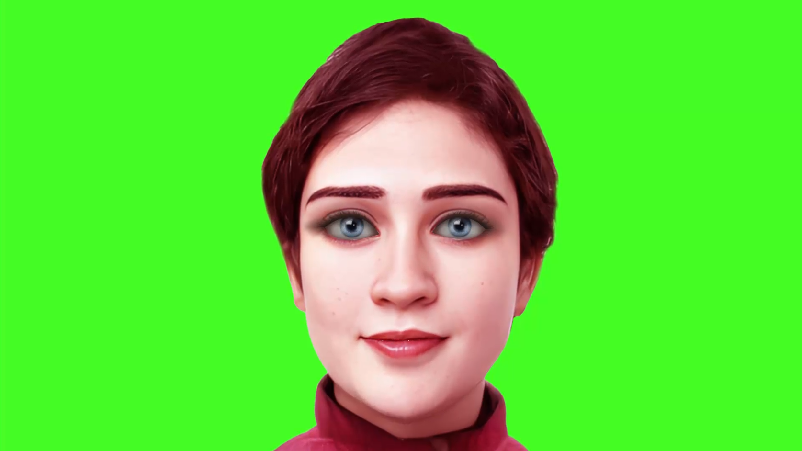

Introduce tu usuario y contraseña para entrar.

Responde 3 preguntas y te sugerimos tu nivel.
Cada contexto adapta la conversación a un objetivo concreto:
Estadísticas y rendimiento de aprendizaje.
Cargando historial...
Próximamente.
Tareas y retos asignados por tu profesor.
Única forma de dar de alta una cuenta: aquí eliges el nombre de usuario y la contraseña inicial del alumno.